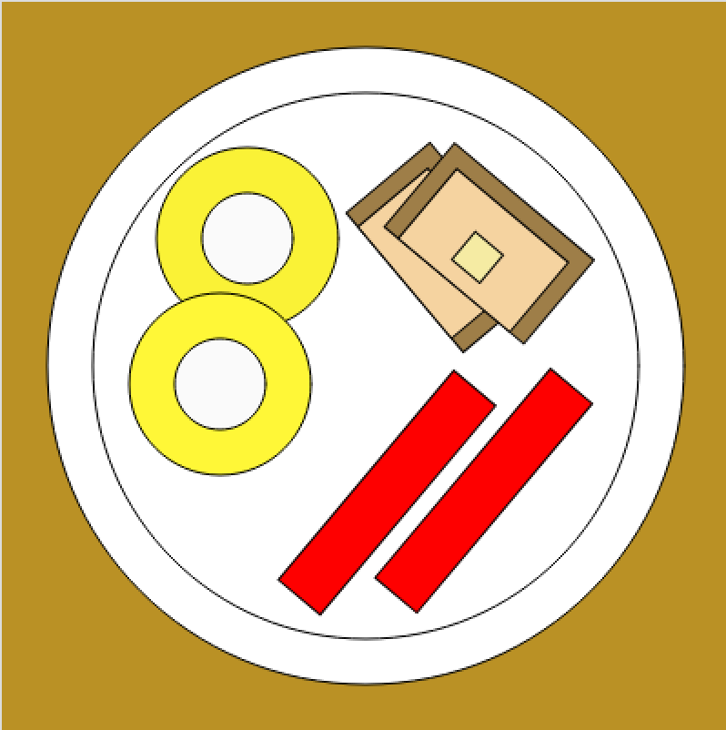

Welcome, welcome, this is an evolving site about my journey into the depths of coding, & its crucial connections to building a more democratic tech economy...enjoy!
I am from the blue mountains of the Shenandoah Valley, in VA, and have a
deep-running love for American and Irish folk music, solidarity
politics, breakfasts of all kinds, and economix (i.e., economics done
differently, like in employee-owned businesses). When I lived in
Nashville, TN and built relationships with other Southerners, I
increasingly felt a sense of place and purpose in the South.
In 2016, I made a home in Selma, AL, where there are good folks and there's good
work to be done. While there, I began exploring coding (more on that in the experience section below).
My wife and I moved to Durham in Nov. of 2021 with our new AL puppy, Inis, to start a next season closer
to some family and friends.
See below for my work experience by topic area, or check out my LinkedIn profile to see where I've worked over the years and some of the trainings and education that have helped shape me.
I am new to coding in many ways, though I have always been intrigued by technology. My Mom tells me that when I was a toddler, she felt I might work with computers one day. For me, my first formal involvement in tech-related work came through the cooperative sector--specifically through something called "platform cooperatives," where workers and/or users have an ownership stake in tech companies. I took a class through The New School and Mondgragon University in 2020 called "Platform Cooperatives Now." This led me into a volunteer project seeking to develop a co-op food delivery app. I was more involved in coordinating the volunteer software developers among us, but it gave me a taste for the grounded quality of building code and the role coding can play in a modern economy. I since applied and was accepted into Code the Dream (CTD) in early 2022, and learned JavaScript, HTML, CSS, among other skills. My React.js course with CTD finishes in Feb. 2023.
--> See my GitHub repositories here for more on these projects (ranging from an experimental database of user-generated cooperatives using SQLite, Node.js, & Express (see next project below), to a React project to-do list, & this current website, a personal portfolio built with Javascript, CSS & HTML, etc.):
--> See a beta site for a user-generated, global directory of cooperatives deployed here, but note you will need to follow README instructions here to deploy the full project & try the co-op submission process. The full working project utilizes a SQLite database, Node.js, & Express.
--> See some creative projects of mine, from programming to woodworking and beyond, here on Behance, and below for some tinkering I've done with programming-specific work:
Find me online at: